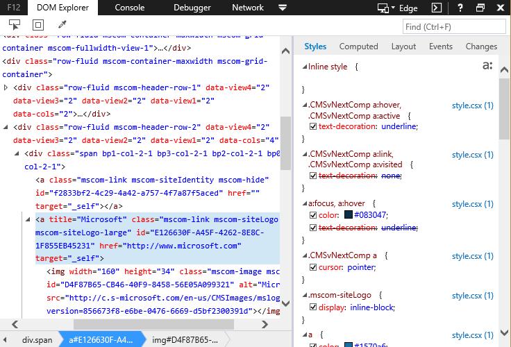

5.1.2.- Microsoft Edge.
Microsoft Edge es el nuevo navegador web de Microsoft Windows. Disponible a partir de la versión 10 de Windows. Para acceder a las herramientas de desarrollo basta con pulsar la tecla F12 y se abrirá el menú de herramientas para desarrolladores.
